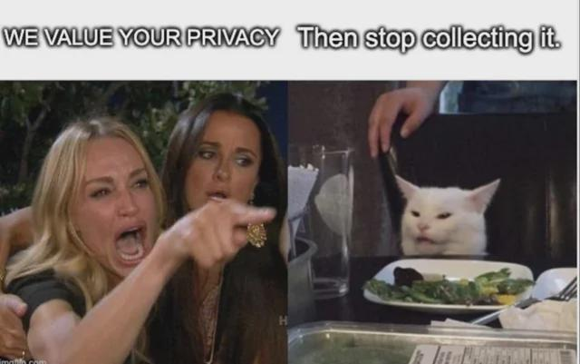

Week 1
Basics of Ethics and a Digital World
This week was focused on how digital technologies are changing our world and why ethics are so important in the digital age. We figured out what digitization (the transformation of information into digital form) is and how it differs from digitalization (the more profound changes in society and culture that digital technologies bring).
We also discussed important ethical issues, for instance, how to maintain privacy, protect data, ensure security, fairness, transparency, accountability. Governments is trying to solve these problems with laws and regulations for AI so that ethics are not violated but I think that today's laws are not suitable for the modern world as they were written only at the beginning of new technologies so reforms are needed. For my part, I have tried to use visual images to show and explain with examples why ethics are important and why companies should not forget about ethics when working with their users.
